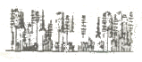
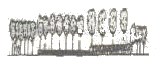
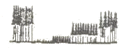
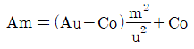

산림산업기사 (2006-08-16 기출문제)
1과목: 조림학
1. 전형적인 산벌작업의 작업 순서를 바르게 기술하고 있는 것은?
- 하종벌 → 예비벌 → 후벌
- 전벌 → 하종벌 → 종벌
- 예비벌 → 하종벌 → 후벌
- 예비벌 → 전벌 → 종벌
(정답률: 96%)

2. 발아시험에 있어서 일정한 기간내에 발아하는 종자입수의 %로 표현한 것은?
- 발아율
- 발아력
- 발아세
- 효율
(정답률: 63%)
3. 다음 중 조파(줄뿌림)하는 수종들로 옳은 것은?
- 박달나무, 낙엽송
- 소나무, 전나무
- 느티나무, 물푸에나무
- 향나무, 밤나무
(정답률: 53%)
4. 대상초벌(획벌)법은 어떤 갱신작업종에 속하는가?
- 모수작업
- 개벌작업
- 택벌작업
- 산벌작업
(정답률: 35%)
5. 종자의 활력검정법을 기술한 것 중 틀린 것은?
- 절단검정법
- X-선 분석법
- 산소검출법
- 환원법
(정답률: 46%)
6. 임목의 뿌리와 공생관계를 가지는 균근 중에서 균사가 피층의 상층 세포까지만 균사망을 형성하고 주로 침엽수에 나타나는 것은?
- 내생균근
- 외생균근
- 내외생균근
- 의균근
(정답률: 71%)
7. 산림에서 개벌 후 지하수위 변화를 벌채 전과 비교하면?
- 높아진다.
- 낮아진다.
- 낮아졌다가 높아진다.
- 변화가 없다.
(정답률: 78%)
8. 일반적으로 제벌은 간벌을 실시 할 때까지 몇 회 실시하는 것이 가장 좋은가?
- 5 ~ 6회
- 7 ~ 8회
- 1회
- 2 ~ 3회
(정답률: 72%)
9. 다음 중 택벌 작업 후에 생기는 임상으로 맞는 것은?



(정답률: 67%)
10. 일반적으로 접목을 실시할 때 꼭 접합이 되어야 하는 조직은?
- 목부조직과 형성층
- 형성층과 수피
- 수피와 목부조직
- 형성층과 형성층
(정답률: 43%)
11. 풍화가 되면 석회분이 적고 산화칼륨이 많은 토양을 형성 하는 변성암에 속하는 것은?
- 화강암
- 현무암
- 혈암
- 편마암
(정답률: 79%)
12. 제벌에 관한 설명으로 틀린 것은?
- 제벌은 조림목이 임관을 형성한 뒤부터 간벌할 시기에 실행함
- 제벌은 조림목 하나하나의 성장보다는 임상을 정비해서 임분전체의 형질을 향상시키는 데 목적을 둠
- 조림수종이 그임지에 적합하여 성림이 잘될 것 같으면 침입한 천연생목은 원칙적으로 제거함
- 제벌은 비용만 들고 산물은 거의 이용되지 않으므로 임분의 형질향상을 위해 실시 시기를 늦추는게 유리함
(정답률: 78%)
13. 다음 중 내음성이 상대적으로 가장 높은 수종은?
- 너도밤나무
- 오리나무
- 사시나무
- 자작나무
(정답률: 60%)
14. 파종 1개월전에 노천매장을 하는 것이 좋은 수종들로 옳은 것은?
- 잣나무, 가래나무
- 삼나무, 편백
- 은행나무, 주목
- 벚나무, 느티나무
(정답률: 45%)
15. 밀깎에 대한 설명 중 가장 적당한 것은?
- 밀깎기 작업은 보통 6 ~ 8월에 실시하며, 9월 이후에는 하지 않는데, 이는 9월 이후 풀이 조림목을 오히려 보호하기 때문이다.
- 조림지 중에서 잡초가 무성한 곳은 7월에 한번, 적은 곳은 6, 8월에 두 번 밀 깎기작업을 실시한다.
- 삼나무, 편백 등의 조림지에서는 묘목의 보호를 위하여 밀깎기작업을 실시하지 않는다.
- 밀깎기작업 중에서 줄베기는 모두베기에 비하여 많은 인력이 소요된다.
(정답률: 75%)
16. 단순히 토양입자의 크기로만 평가하였을 때, 단위부피당 토양이 지닌 양이온치환용량(CEC)이 가장 큰 것은?
- 사질토양
- 미사질토양
- 정질토양
- 사질양토
(정답률: 37%)
17. 1년생으로부터 100년생에 이르는 각 영급별 나무가 어울려 자라고 있는 60ha의 임지가 있다. 이 임지를 5ha씩 12개의 임분으로 구획하고 해마다 1개 임분씩 수확벌채와 무육간벌을 실시하면서 택벌림 작업을 한다. 이 경우 회귀년은?
- 5년
- 2년
- 10년
- 12년
(정답률: 59%)
18. 묘목을 가식 할 때의 설명으로 틀린 것은?
- 가식이란 묘목을 심기 전 일시적으로 땅에 뿌리를 묻어 건조하지 않도록 해 주는 작업이다.
- 1~2개월 장기간 가식을 할 경우에는 관수가 필요하다.
- 추위나 바람의 피해가 우려되는 곳은 묘목의 정단부분을 바람과 반대방향으로 되도록 누어서 묻어준다.
- 될 수 있는대로 햇볕이 강한 나지에 묻어준다.
(정답률: 82%)
19. 온대지역에 있어서 인위적인 요인으로 산림이 파괴되지 않는다면 최종적으로 산림이 형성되는 수종은?
- 양수 수종
- 음수 수종
- 중용 수종
- 극양 수종
(정답률: 88%)
20. 다음 중 시비 방법에 관한 설명으로 틀린 것은?
- 지효성 비료는 상 만들기 1개월 전에 시비한다.
- 속효성 비료는 상 만들기 직후에 시비한다.
- 이식상에서의 추비는 묘목이 활착한 9월경에 하는 것이 좋다.
- 파종상에서의 추비는 1,2차 솎음 후 시비하는 것이 좋다.
(정답률: 73%)
2과목: 산림보호학
21. 눈과 새순을 가해하는 것으로 노린재 목에 속하는 해충은?
- 비구미
- 진딧물
- 솔노랑잎벌
- 애기잎말이 나방
(정답률: 48%)
22. 다음 중 대기오염에 견디는 힘이 가장 강한 수종으로만 나열된 것은?
- 소나무와 느릅나무
- 삼나무와 전나무
- 전나무와 소나무
- 식나무와 사철나무
(정답률: 43%)
23. 다음 중 병징만 나타나고 표징이 나타나지 않는 것은?
- 밤나무의 흰가루병
- 소나무의 잎녹병
- 포플러의 모자이크병
- 오리나무의 갈색무늬병
(정답률: 65%)
24. 모잘록병의 방제법으로서 거리가 먼 것은?
- 배수ㆍ통풍에 유의한다.
- 토양소독을 한다.
- 질소질 비료의 과용을 막고 인산질 비료를 충분히 시비한다.
- 햇볕을 잘 쬐지 못하도록 피음 처리를 한다.
(정답률: 86%)
25. 미국흰불나방 유층의 식해를 가장 적게 받는 수종은?
- 버즘나무
- 벚나무
- 단풍나무
- 은행나무
(정답률: 73%)
26. 다음 중 해충의 기계적 구제 방법이 아닌 것은?
- 차단법
- 포살법
- 등화유살법
- 천적이용법
(정답률: 85%)
27. 포플러잎 녹병(rust)발생의 예방에 도움이 되는 것은?
- 포플러 묘포의 부근에는 배나무를 심지 말아야 한다.
- 포플러 묘포의 부근에는 중간기주인 참나무류를 심지 말아야 한다.
- 포플러 묘포는 낙엽송 조림지에서 멀리 떨어진 곳에 설치 한다.
- 포플러 묘포는 향나무 식재지와 가급적 멀리 떨어진 곳에 설치한다.
(정답률: 70%)
28. 밤나무혹벌의 월동 장소와 월동 충태는?
- 눈속에서 알로 월동
- 눈속에서 유충으로 월동
- 지피물 속에서 알로 월동
- 지피물 속에서 번데기로 월동
(정답률: 44%)
29. 소나무 혹병균의 중간기주는?
- 들국화
- 매발톱나무
- 졸참나무
- 향나무
(정답률: 75%)
30. 조림지에서 가장 올바른 상해의 예방법은?
- 조림수종 및 품종의 선택에 유의한다.
- 하초와 잡초를 키워서 조림목을 보호한다.
- 왜림의 벌채는 가을에 실시한다.
- 따뜻한 곳에서 양묘한 묘목을 추운지방에 조림한다.
(정답률: 67%)
31. 중간기주(alternate host)의 설명으로 올바른 것은?
- 두 기주 중에서 경제적 가치가 상대적으로 적은 기주
- 두 기주가 경제적으로 가치가 비슷한 기주
- 두 기주 중에서 경제적 가치가 상대적으로 큰 기주
- 두 기주의 가치를 경제적으로 비교할 수 없는 기주
(정답률: 60%)
32. 방화선의 설치에 대한 설명으로 가장 바른 것은?
- 산의 능선ㆍ산림구획선ㆍ임도 등을 이용한다.
- 나비는 보통 50~100m 이상 넓게 한다.
- 급경사지ㆍ고사목 집적지역을 설치위치로 정한다.
- 방화선을 소화 작업의 근거지가 될 수 있다.
(정답률: 56%)
33. 밤나무의 줄기에 발생한 병환부의 나무껍질을 벗겨보니 황색균사가 부채꼴 모양을 하고 있었다. 이 병명은?
- 줄기마름병
- 눈마름병
- 반점병
- 탄저병
(정답률: 85%)
34. 유충과 성충이 잎을 식해하는데, 식혼이 엽맥만을 남기고 엽육을 가해하는 해충은?
- 솔나방 유충
- 잎벌류
- 잎벌레류
- 잎말이나방류
(정답률: 62%)
35. 다음 중 솔잎혹파리의 천적으로 알려진 것은?
- 솔나방
- 먹좀벌
- 솔노랑잎벌
- 소나무 거미줄 잎벌
(정답률: 83%)
36. 다음 중 솔잎혹파리 성충의 우화시기로 가장 적합한 것은?
- 5월 ~ 7월
- 8월 ~ 10월
- 11월 ~ 1월
- 2월 ~ 4월
(정답률: 84%)
37. 천적을 선택할 때 구비조건으로 적당치 않은 것은?
- 증식력이 큰 것
- 해충 출현과 그 생활사가 일치되는 것
- 성비가 작은 것
- 2차 기생봉이 없는 것
(정답률: 75%)
38. 다음 중 볕데기(sun-scorch)에 비교적 저항성인 수종은?
- 오동나무
- 버즘나무
- 굴참나무
- 호두나무
(정답률: 74%)
39. 다음 중 병원체의 번식기관에 의한 표징이 아닌 것은?
- 자좌
- 포자
- 분생자병
- 병자각
(정답률: 58%)
40. 오동나무 빗자루병의 매개충으로 가장 적합한 것은?
- 복숭아혹진딧물
- 마름무늬매미충
- 담배장님노린재
- 솔잎혹파리
(정답률: 82%)
3과목: 임업경영학
41. 임지의 경제적 위치의 양부를 표시하는 것은?
- 지위
- 지리
- 지황
- 지세
(정답률: 27%)
42. 흉고직경이 50cm,수고가 18m, 수간재적이 1.59m3인 입목의 흉고형수는? (단, π=3.141)
- 0.40
- 0.45
- 0.50
- 0.55
(정답률: 62%)
43. 말구직경 24cm, 중앙직경 28cm, 원구직경 34cm, 재장이 4m 인 통나무의 재적은? (단, 뉴톤(Newton)식으로 계산, π=3.141)
- 0.246m3
- 0.272m3
- 0.295m3
- 0.255m3
(정답률: 39%)
44. 삼림측량 중 가장 중요한 것은?
- 주위측량
- 시설측량
- 삼림구획측량
- 면적측량
(정답률: 34%)
45. 수확조정의 기법 중 평분법은?
- 전 산림면적을 윤벌기 연수의 벌구로 나누고 매년 1벌구씩 벌채 수확한다.
- 임반내 소빈을 단위로 몇 개의 영계로 영급을 편성하고 이를 법정림의 영급과 비교 대조하여 그 과부족을 조절한다.
- 작업급의 법정축적과 현실림의 축적 및 생장량을 조사하여 일정한 공식으로 표준벌채량을 정한다.
- 윤벌기를 몇 개의 분기로 나누고 분기마다 수확량을 같게 한다.
(정답률: 65%)
46. 벌기 이상의 임목평가에 적합한 방법은?
- 임목기망가법
- 시장가역산법
- 원가수익절충법
- 임목비용가법
(정답률: 74%)
47. 매목조사는 측정 대상지 각 임목의 어떤 인자를 측정 하는가?
- 흉고직경
- 수고
- 흉고단면적
- 흉고형수
(정답률: 60%)
48. 법정림의 구비 요건이 아닌 것은?
- 법정영급분배
- 법정임분배치
- 법정생장량
- 법정벌기령
(정답률: 57%)
49. 재적수확 최대의 벌기령을 택하는 방법은?
- 총평균생장량 최대기
- 등귀생장 최고기
- 형질생장 최고기
- 총가생장 최고기
(정답률: 87%)
50. 글라제르(Glaser)식

에서 Au는?- 초년도의 조림비
- u년도의 주벌수입
- u년도의 간벌수입
- I년도의 입목가
(정답률: 43%)
51. 영림계획서에 포함되는 도면의 종류가 아닌 것은?
- 영림계획도
- 위치도
- 기본도
- 작업도
(정답률: 24%)
52. 이율의 종류 중 용도에 의해 구분되는 것은?
- 장기이율
- 경영이율
- 평정이율
- 대부이율
(정답률: 62%)
53. 임목의 간재적이 0.8m3이고, 이를 벌채 조재하여 원목재적을 계산하니 0.65m3이었다. 이 나무의 조재율은?
- 약 15%
- 약 19%
- 약 81%
- 약 85%
(정답률: 58%)
54. 임업경영의 보속성 원칙 개념과 관계가 없는 사람은?
- Carlowitz
- Heyer
- Judeich
- Wagner
(정답률: 31%)
55. 임업이율의 특징으로 옳은 것은?
- 임업이율은 대부이자이다.
- 임업이율은 현실이율이다.
- 임업이율은 명목적 이율이다.
- 임업이율은 단기이율이다.
(정답률: 62%)
56. 임령이 24년인 임목을 수간석해 하였을 때 단면 번호 1번의 연륜수가 19개 였다. 이 임목이 1.2m 자라는데 소요된 기간은?
- 4년
- 5년
- 6년
- 7년
(정답률: 80%)
57. 산림경영의 원칙으로 적합하지 않은 것은?
- 수익성의 원칙
- 비교우위의 원칙
- 공공성의 원칙
- 합자연성의 원칙
(정답률: 77%)
58. 임령이 27년 일 때 이를 영급기호로 표시하면?
- Ⅰ 영급
- Ⅱ 영급
- Ⅲ 영급
- Ⅳ 영급
(정답률: 72%)
59. 삼림이 어떠한 구성상태에 있을 떄 자연을 최대로 이용하여 삼림생산을 계속 할 수 있을 것인가를 장기간에 걸쳐 경험적으로 파악하려는 수확조절 방법은?
- 평분법
- 법정축적법
- 영급법
- 조사법
(정답률: 36%)
60. 임분이 처음 성립하여 생장하는 과정에 있어서 성숙기에 도달하는 연령으로 경영목적에 따라 미리 정해지는 연령은?
- 벌채령
- 벌기령
- 윤벌령
- 회귀령
(정답률: 79%)
4과목: 산림공학
61. 임도 노면의 유지ㆍ보수공사에 대한 설명으로 틀린 것은?
- 노면보다 높은 길어깨는 깎아내고 다져서 평탄하게 만들어야 한다.
- 임도노면의 차량하중 및 노면유하수로 인한 바퀴자국이나 골을 수시로 없애야 한다.
- 노면고르기는 가능한 노면이 건조한 상태에서 실시하는 것이 좋다.
- 강우 직후 또는 해빙기에 포장도 이외의 임도는 노면을 보호하기 위하여 통행을 규제할 필요가 있다.
(정답률: 73%)
62. 체인톱 연료로 휘발유를 20L 사용시 포함되는 오일의 량은?
- 약 2L
- 약 1.5L
- 약 0.5L
- 약 0.8L
(정답률: 24%)
63. 다음 중 노체의 구성 순서로 옳은 것은?
- 노상 → 기층 → 노면 → 표층
- 노상 → 노반 → 기층 → 표층
- 노반 → 보조기층 → 기층 → 표층
- 노반 → 노상 → 기층 → 표층
(정답률: 70%)
64. 다음 중 유거계수에 대한 연결이 잘못된 것은?
- 임상이 좋은 산지유역 : 0.35 ~ 0.45
- 임상이 좋지 않은 산지유역 : 0.45 ~ 0.65
- 황폐유역 : 0.65 ~ 0.85
- 황폐가 심한 민둥산 유역 : 0.9
(정답률: 63%)
65. 임도가 가장 이상적으로 배치되었을 경우에 개발지수(developement index)는 얼마에 근접하는가?
- 0
- 1
- 10
- 100
(정답률: 81%)
66. 임도망 계획시 고려해야 할 사항이 아닌 것은?
- 운재비가 적게 들도록 한다.
- 운반 도중에 목재의 손모를 적도록 한다.
- 운반량에 제한이 없도록 한다.
- 운재방법이 다양화되도록 한다.
(정답률: 60%)
67. 신비탈면 비탈다듬기공사를 설계할 때 유의해야 할 점이 아닌 것은?
- 수정기울기는 대체로 최대 35° 전후로 한다.
- 퇴적층의 두께가 3m 이상일 때에는 땅속흙막이 공작물을 설계한다.
- 붕괴면 주변의 상부는 충분히 끊어내도록 설계한다.
- 공사는 산 아래부터 시작하여 산꼭대기로 진행한다.
(정답률: 65%)
68. 별도방향에 대한 설명 중 틀린 것은?
- 별도방향은 수형, 지형, 집재방법에 따라 달라진다.
- 산정방향으로 벌도 할 때는 산록에서부터 작업한다.
- 임지 내에 공간이 있으면 공간이 있는 방향으로 벌도 한다.
- 산복과 산정에 임도가 있는 경우는 산록 방향으로 벌도한다.
(정답률: 45%)
69. 야계의 계획구배는 현 계상의 얼마를 표준으로 하는가?
- 1/2 ~ 2/3
- 1/3 ~ 1/2
- 1/4 ~ 1/3
- 1/5 ~ 1/4
(정답률: 50%)
70. 산림법령상 임도의 설계 및 시설기준에서 옆도랑 설치시 깊이와 너비 기준은?
- 15cm 내외, 50 ~ 100cm
- 20cm 내외, 100 ~ 200cm
- 30cm 내외, 50 ~ 100cm
- 40cm 내외, 300 ~ 400cm
(정답률: 65%)
71. 다음 중 가공본줄을 이용한 가선집재방식이 아닌 것은?
- 엔드리스 타일러식(endless Tyler system)
- 스너빙식(snubbing system)
- 러닝스카이 라인식(running skyling system)
- 호이스트 캐리지식(hoist carriage system)
(정답률: 43%)
72. 다음 중 기계톱 작업시의 개인 안전장비가 아닌 것은?
- 안전헬멧
- 안전화
- 얼굴보호망
- 앞손보호판(hand guard)
(정답률: 74%)
73. 다음 중 빗물침식에 해당되지 않는 것은?
- 우격침식
- 면상침식
- 누구침식
- 파랑침식
(정답률: 73%)
74. 예불기에 장착된 안전장치 혹은 예불기 사용시 착용하는 안전장비가 아닌 것은?
- 안전커버
- 안면보호망
- 체인브레이크
- 안전복
(정답률: 82%)
75. 비탈면의 안정을 위하여 직접 비탈면에 부착하여 시공되는 공법이 아닌 것은?
- 비탈면힘줄박기공법
- 비탈면격자틀붙이기공법
- 낙석방지망덮기공법
- 낙석방지책공법
(정답률: 50%)
76. 다음 중 임도밀도와 관련된 설명으로 틀린 것은?
- 임도밀도는 산림의 단위 면적당 임도 연장으로 나타낸다.
- 임목 축적이 증가할수록 일반적으로 적정임도밀도는 높아진다.
- 임도밀도의 기본 단위는 m/ha이다.
- 임도밀도가 높아지면 평균집재거리는 길어진다.
(정답률: 77%)
77. 임업효과지수가 다음과 같은 간선임도노선 중에서 최우선적으로 도로를 개설할 노선은?
- 0.3
- 0.6
- 1.0
- 1.5
(정답률: 62%)
78. 비탈다듬기 또는 단끊기에 의하여 발생하는 남는 토사를 산복의 요부에 투입하여 이를 고정 유지시키며 침식을 방지하고자 시공하는 공사는?
- 단끊기
- 산비탈 흙막이
- 선떼붙이기(입지공)
- 땅속흙막이(묻히기)
(정답률: 56%)
79. 조공식 파종공법에 대한 설명으로 틀린 것은?
- 사용되는 비료는 속효성 비료보다 지효성 비료가 좋다.
- 파종 후에는 잘 밟아주고 다시 약간의 흙덮기를 하여 준다.
- 파종구의 길이 1,000m에 약 330L의 비토와 비료를 잘 혼합한 후 3mm 정도의 체로 쳐서 사용한다.
- 계단간 비탈면에 30-50cm의 직고마다 나비 15-20cm의 수평계단을 설치하고 계단안에 10cm 정도의 파종구를 판다.
(정답률: 53%)
80. 유심의 방향을 변경하기 위하여 계안의 한쪽 또는 양쪽으로부터 유심을 향하여 돌출한 공작물은?
- 돌망태 기슭막이
- 수제
- 바닥막이
- 구곡막이
(정답률: 56%)
산벌작업은 산림에서 나무를 베거나 제거하는 작업을 말합니다. 이 작업은 일정한 순서에 따라 진행되어야 합니다.
먼저 예비벌 작업을 합니다. 이는 산림 내부에 있는 나무들을 제거하고, 작업에 필요한 도로나 공간을 마련하는 작업입니다.
다음으로 하종벌 작업을 합니다. 이는 산림 내부에 있는 주요 나무들을 제거하는 작업입니다. 이 작업을 통해 산림 내부의 공간이 더욱 넓어지고, 작업에 필요한 공간이 확보됩니다.
마지막으로 후벌 작업을 합니다. 이는 하종벌 작업을 마친 후, 남은 나무들을 제거하는 작업입니다. 이 작업을 통해 산림 내부의 공간이 최대한 확보되고, 작업에 필요한 공간이 마련됩니다.